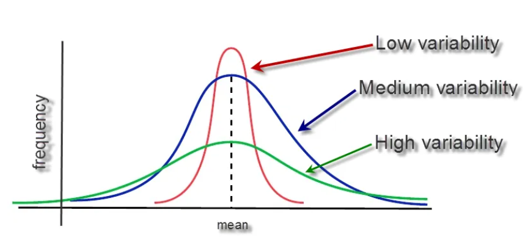
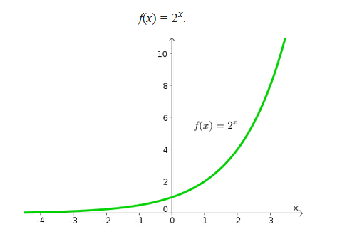

A Little Speech Before We Begin
Before we dive into more math, let’s take a moment to talk about motivation. Over the fast few days,
we started our journey with some basic stats—nothing too overwhelming, right? But today, you might be
wondering, Why should I keep
going? Why do I need all this math in the first place?
The short answer: because it’s
the foundation. You’re not just learning random numbers and formulas; you’re gaining the keys to
understanding how AI works. Think of it like building a house. Sure, it might feel tedious to lay down
the foundation, but without
it, your house would crumble.
And let’s be honest, it’s easy to get discouraged. I mean, who actually enjoys staring at graphs and
equations all day? It’s like trying to read a novel written in an alien language. But here’s the thing:
once you start getting the hang
of it, the picture begins to clear up. That’s when you realize—this stuff isn’t so scary after all. It’s
actually kind of fun. And who doesn’t like feeling like a wizard who can decode the world?
So don’t sweat the small stuff. We’re in this together, and every step forward, no matter how tiny,
brings you closer to that Aha! moment. Stay curious. Keep asking questions. The motivation will
come. I promise.
Now that we’ve got the pep talk out of the way, let’s tackle some more stats and dive deeper into
what makes AI tick. Ready to go? Let’s do this!
Beyond the Average: Understanding Variance and Standard Deviation
You probably already know what the mean is, right? It’s that classic average we’ve all encountered since middle school. But today, we’re going to shine a spotlight on the less glamorous cousins of the mean: variance and standard deviation. Don’t worry—once you understand them, they’ll be your best friends.
A Quick Refresh on Mean
Let’s briefly revisit the mean just to keep things fresh. If you have a set of numbers—say, 1, 2, 3, 4, and 5—the mean is the sum of those numbers divided by how many numbers you have. So:
Mean
Diving Deep into Variance
Imagine you’re playing a game where everyone has to throw a ball at a target. If everyone’s throws land close to the bullseye, the variance is small because the throws are clustered tightly around the target. But if the throws are scattered all over the place—some near the bullseye, some far away—the variance is large.
So, in simple terms, variance tells you how much the numbers in your dataset are spread out. A small variance means most numbers are close to the average (like the throws near the target), while a large variance means the numbers are more spread out and not as close to the average.

In this figure you can get an understand. As there is low variance, the lines are more compressed,
while the spread is pretty large in high variance, i.e., most points are more far away from the mean.
Here’s how it’s calculated:
- Find the mean of your data.
- Subtract the mean from each data point.
- Square the result of each subtraction.
- Find the average of these squared differences
Why subtract from mean? Well, we want to find the deviation of the points from our
mean, so we can get the spread.
Why squaring the terms? Well,
- It ensures all differences are positive (example: 5 - mean = 5 - 10 = -5). We can't work with
negative values as they'll cancel each other out. -5 + 5 = 0.
- It gives more weight to larger deviations. This is because exponential functions, as the name
suggest, grow very quickly.

As you can see in the figure, 2x, grows pretty fast.
Now, consider this: when there are larger deviations from the mean, we want to penalize those differences more. Intuitively, values that are close to the mean and values that are far away shouldn’t be treated the same. By squaring the differences, we emphasize the larger deviations, making them stand out more than smaller ones. This way, the model can account for extreme values more effectively.
Why average these squared differences? The reason is to make the variance a more standardized
measure. Let me explain:
Imagine you have two datasets. One dataset has 5 numbers, and another has 100 numbers. If you just
added up the squared differences, the dataset with 100 numbers would automatically have a much larger
sum, just because there are more
numbers in it. This would make the variance unfairly large.
By averaging the squared differences, we normalize the result. It makes sure that the
variance is based on the number of data points in the dataset, rather than just the total size. This
way, you can compare datasets
of different sizes on an equal footing.
Now let's calculate variance for our test scores:
Consider two datasets:
- Dataset 1: 2, 4, 6, 8, 10
- Dataset 2: 1, 4, 6, 8, 12
The means of both datasets are 6.
For Dataset 1, you’d subtract the mean (6) from each number and square the result:
For Dataset 2, you'd do the same,
Standard
Deviation: The User-Friendly Cousin
If variance is a bit like the nerdy kid who talks in equations, the standard deviation is the
friendly cousin who puts it all in simpler terms.
Standard deviation is just the square root of the variance. Why? Because the variance squared
everything, so to get back to the original scale of the data, you take the square root. It’s like
translating a book from math-speak
back into regular language.
When we calculate variance, we square the differences from the mean. This squaring step is important
because it helps emphasize larger deviations, but it also causes a problem: the units of the variance
are no longer
the same as the original data.
For example, if you’re working with data in meters, then the variance ends up in square
meters. If your data is in seconds, the variance is in square
seconds. This isn’t very intuitive—how do you interpret a measurement in square seconds?
It’s hard to make sense of.
This is where standard deviation comes to the rescue. The standard deviation is simply the square
root of the variance. By taking the square root, we return the units to their original form—so if our
data is in meters, the standard
deviation will also be in meters. This makes it much easier to interpret because the standard deviation
tells you, on average, how far the data points are from the mean in the same units as your original
data.
So, let’s say the variance of a dataset is 8 (like in our first example). The standard deviation
would be:
Now, instead of saying, The variance is 8, you can say, On average, the data points are
about 2.83 units away from the mean. This makes it much easier to interpret.
CONGRATULATIONS!!!
You have just completed Day 5. Now do re-read the whole thing again. Until you can understand every concept. Take a pen and paper; and make notes. Revise. And remember, nothing is tough. You just need to have the hunger for knowledge.